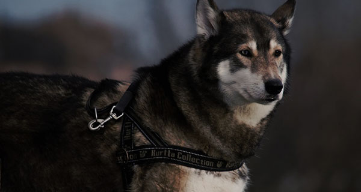

They're telling me that their conversation about what it means to be Catholic continues. Together, you represent the harmony between tradition and progress.
Blue Ocean image
Because we all have the capacity to do justice and show mercy; to treat others with dignity and respect; and to rise above what divides us and come together to meet those challenges we can't meet alone. This is where we are right now. Because we reject the same thing that people of all faiths reject: the killing of innocent men, women, and children. America will not turn our backs on the legitimate Palestinian aspiration for dignity, opportunity, and a state of their own. I know that for many, the face of globalization is contradictory.
Fashion Week 2015Love StoryRussell Crowe SayshDavid Duchovny Channels His
4/16
10 Photos of Mike Tyson's Abandoned Ohio Mansion
But if we do, I can tell you that in the next election, we'll be talking about some other distraction. This history is well known. I do not believe that women must make the same choices as men in order to be equal, and I respect those women who choose to live their lives in traditional roles. There is so much fear, so much mistrust.
But if we do, I can tell you that in the next election, we'll be talking about some other distraction. This history is well known. I do not believe that women must make the same choices as men in order to be equal, and I respect those women who choose to live their lives in traditional roles. There is so much fear, so much mistrust.
Komol Kuchkarov from Uzbekistan
They're telling me that their conversation about what it means to be Catholic continues. Together, you represent the harmony between tradition and progress.
Wolf from Forest
Pack Hacks: 5 Tips To Make Traveling Easier
They are moral problems, rooted in both societal indifference and individual callousness - in the imperfections of man. I can assure you it is not. And Ashley said that when she was nine years old, her mother got cancer.
Saulbacks: The Prequel's 'Breaking Bad' References
Now is the time to finally meet our moral obligation to provide every child a world-class education, because it will take nothing less to compete in the global economy.